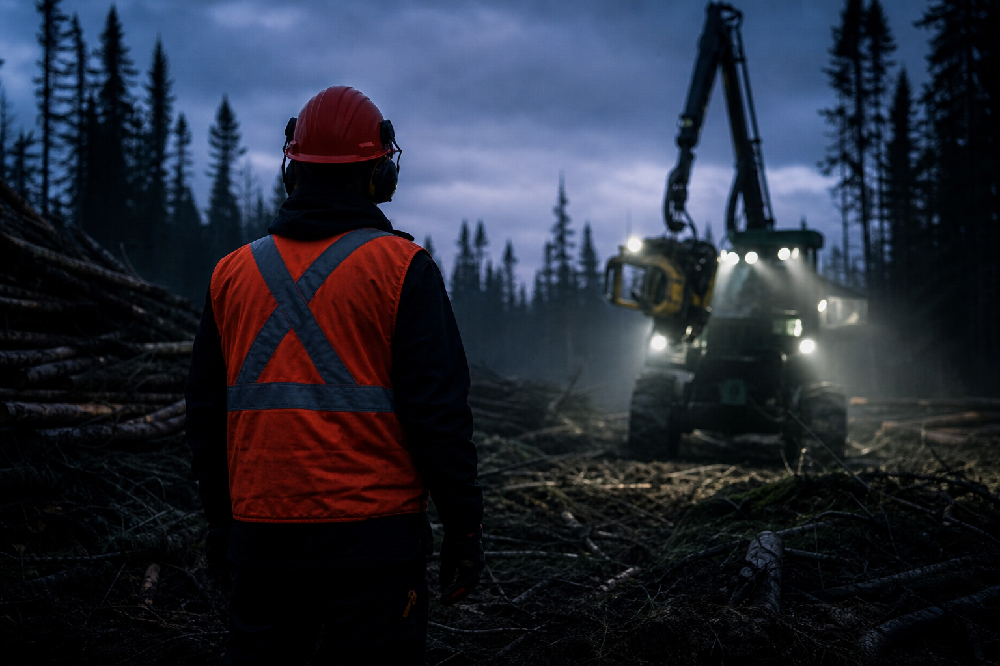

Pendant qu'une abatteuse multifonctionnelle travaille en forêt, sa tête mesure chaque tige qu'elle récolte : essence, longueur, diamètre, volume, position. En une journée, une seule machine génère des milliers de mesures. La question n'est donc pas de savoir si la donnée existe. La vraie question, c'est combien de cette donnée se rend réellement jusqu'au bureau — et dans quel état.
Dans beaucoup d'entreprises forestières, la réponse est décevante. Les chiffres restent prisonniers de la machine, exportés à la main quand quelqu'un y pense, transférés sur une clé USB qui finit oubliée dans la cabine, ou envoyés par courriel le vendredi soir. Résultat : les volumes sont pilotés avec une semaine de retard, et un temps précieux est perdu à reconstruire un portrait de production à partir de morceaux.
Chez G.A. Logix, on s'attaque à ce problème depuis longtemps. Voici comment, concrètement.
Le vrai problème : des données prisonnières de la machine
Une tête d'abatteuse, c'est un ordinateur de mesure embarqué. Elle sait ce qu'elle coupe, à quelle longueur, dans quelle essence. Le hic, c'est que chaque marque enregistre ces informations à sa façon, dans sa propre base de données, dans son propre format.
Pour un entrepreneur qui possède des machines de plusieurs marques, ça veut dire autant de méthodes d'extraction différentes. Pour un donneur d'ouvrage qui travaille avec plusieurs sous-traitants, c'est encore pire : il reçoit des fichiers hétérogènes — quand il les reçoit. La donnée est là. Elle est juste difficile à sortir, et encore plus difficile à consolider.
Notre approche : lire directement dans les machines
Notre solution est simple à expliquer : on va lire directement dans la base de données embarquée de la machine. On ne demande pas à l'opérateur de produire un fichier d'échange. On ne dépend pas d'un export manuel. On lit la source.
Soyons précis, parce que c'est souvent mal compris dans l'industrie : nous ne lisons pas un fichier d'échange forestier standardisé. Nous lisons les bases de données des machines elles-mêmes, puis nous traitons les données. C'est une distinction technique importante.
Quatre marques de têtes d'abatteuse sont prises en charge aujourd'hui :
- Komatsu
- Ponsse
- LogMax
- Logset
Peu importe laquelle de ces marques équipe votre flotte, la logique reste la même du point de vue de l'utilisateur : vous sélectionnez votre chantier, et les données de production arrivent au bureau, prêtes à être analysées.
SyncLogix et ForestLogix : deux faces du même flux
Deux produits G.A. Logix travaillent ensemble pour rendre tout ça possible :
- SyncLogix est le pipeline qui capte les données de production directement dans les machines et les synchronise vers le cloud G.A. Logix. Il tourne en arrière-plan, sans intervention de l'utilisateur.
- ForestLogix est la plateforme de gestion des opérations forestières où ces données deviennent disponibles au bureau : cartographie, tables, segmentation et exports.
En résumé : SyncLogix alimente le cloud avec les données de production des têtes d'abatteuse, et ForestLogix permet de les consulter et de les analyser au bureau. L'un capte, l'autre exploite.
Concrètement, à quoi ça ressemble au bureau
Le déroulement est direct :
- Dans ForestLogix, on sélectionne un ou plusieurs chantiers dans la liste fournie par le serveur G.A. Logix.
- Les données de production de tête d'abatteuse sont téléchargées pour ces chantiers.
- Le téléchargement et les traitements lourds tournent en arrière-plan : on peut continuer à travailler pendant ce temps.
- À la fin, les données apparaissent comme des couches géospatiales et des tables, prêtes à être cartographiées, segmentées et exportées.
La segmentation se fait notamment par machine et par opérateur. C'est précisément ce niveau de détail qui transforme une masse de mesures en information de gestion utile. Et comme la sélection de chantiers se fait en lot, la préparation d'une revue de production hebdomadaire couvrant plusieurs parterres de coupe se monte en une seule opération, plutôt qu'en répétant la même manipulation dix fois.
Des données qui restent à portée de main
Les données téléchargées ne sont pas affichées une seule fois puis perdues : elles restent disponibles localement sur le poste, ce qui permet de les requêter et de les réutiliser sans relancer un téléchargement à chaque ouverture. Concrètement, on peut rouvrir un chantier le lendemain, retravailler ses analyses et produire ses exports, même si la connexion du bureau est capricieuse ce matin-là.
C'est un détail qui compte dans la vraie vie : les réseaux des bureaux régionaux ne sont pas toujours parfaits, et personne n'a envie d'attendre un nouveau téléchargement complet juste pour ajuster une symbologie.
Ce que ça change pour un dirigeant forestier
Si vous dirigez une coopérative, un groupement, une entreprise de récolte ou si vous êtes donneur d'ouvrage, le bénéfice est stratégique. Vous obtenez une vue consolidée de la production de vos récolteurs, par chantier, par machine et par opérateur, sans dépendre d'un export manuel propre à chaque conducteur.
Ça veut dire des volumes et des essences disponibles pour le suivi, sans la course aux fichiers du vendredi. Ça veut dire moins d'écarts entre ce que vous facturez et ce que vous avez réellement sorti. Et ça veut dire que vous pouvez répondre à votre conseil d'administration ou à votre client avec des chiffres, pas avec des estimations.
Le tout est livré par une équipe de Plessisville qui comprend le contexte québécois : forêt publique, MRNF, RNI, et le quotidien de la récolte mécanisée.
Ce que ça change au bureau
Pour l'équipe technique, l'avantage est encore plus terre à terre. Plus besoin d'aller en forêt brancher une clé USB sur chaque machine. Plus besoin d'attendre qu'un opérateur pense à exporter. Les données arrivent dans le cloud G.A. Logix et se consultent directement dans ForestLogix.
Une fois les couches chargées, l'analyse est libre :
- Suivre les volumes récoltés par essence, pour appuyer la facturation et le mesurage.
- Comparer la production réelle aux prescriptions et aux objectifs du chantier.
- Voir la contribution de chaque machine et de chaque opérateur, pour mieux planifier.
- Cartographier la production sur le territoire, là où elle a réellement eu lieu.
Aucune de ces analyses n'est possible tant que la donnée dort dans la machine. C'est tout l'enjeu.
Soyons clairs sur ce que ça ne fait pas
L'honnêteté technique fait partie de notre marque, alors disons les choses telles qu'elles sont :
- La solution ne pilote pas la tête d'abatteuse en temps réel. Elle consomme les données après coup, au bureau. Elle ne configure pas la machine et ne reçoit pas de flux pendant l'abattage.
- Il n'y a pas de notification automatique de nouvelles données. La récupération se lance quand l'utilisateur le demande.
- Les marques couvertes sont Komatsu, Ponsse, LogMax et Logset. Les autres marques ne sont pas prises en charge aujourd'hui.
Ces limites ne sont pas des excuses, ce sont des balises. Vous savez exactement ce que vous achetez.
Pourquoi c'est important au Québec
La récolte mécanisée est la réalité de la majorité des chantiers en forêt publique. Les volumes sont importants, les marges sont serrées, et la traçabilité de la production est un enjeu de gestion autant que de conformité.
Avoir un fournisseur local qui lit les données de plusieurs marques de têtes d'abatteuse, qui les rend disponibles dans une plateforme déjà utilisée au bureau, et qui répond en français, ça simplifie une chaîne qui est trop souvent un casse-tête. C'est exactement le genre de problème concret qu'on aime régler chez G.A. Logix. Le terrain est notre cahier des charges.
En résumé
Vos têtes d'abatteuse génèrent déjà une montagne de données précieuses. Le défi n'a jamais été de les produire, mais de les sortir de la machine et de les rendre utiles. Avec SyncLogix qui capte et ForestLogix qui exploite, ces données arrivent au bureau, par machine et par opérateur, prêtes à analyser, peu importe la marque.
Vous voulez voir ce que ça donne avec vos propres chantiers? Demandez votre démonstration gratuite — on vous montre le flux complet, du parterre de coupe à votre écran.